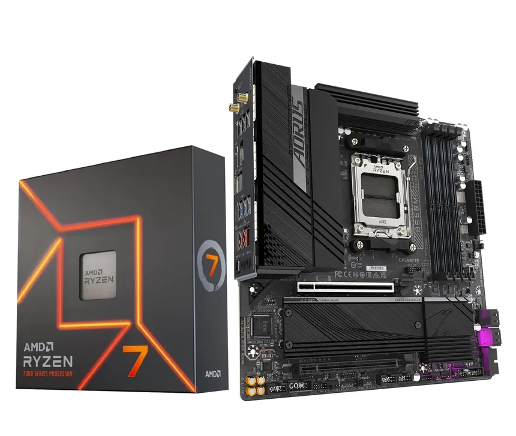

Kapitola 2: Počítačový Hardware
Hardware označuje veškeré fyzicky existující technické vybavení počítače na rozdíl od dat a programů (označovaných jako software).

komponenty
Procesor (CPU)
- Definice: základní součást počítače vykonávající strojový kód spuštěného programu.
- Hardware: složitý sekvenční integrovaný obvod umístěný na základní desce.
Grafická karta
- Funkce: stará se o grafické výpočty a zobrazení obrazu na monitoru.
- Připojení: většinou přes PCI-Express patici, nebo je integrována na základní desce.
Paměť RAM
- Charakteristika: paměť s přímým přístupem k libovolné části dat v konstantním čase.
- Druhy: zahrnují běžné operační paměti (SDRAM, DDR1–DDR5) a grafické paměti (GDDR).
Pevný disk
- Účel: nevolatilní zařízení pro dočasné nebo trvalé uchovávání většího množství dat.
- Technologie: využívá buď magnetickou indukci (HDD), nebo flash paměť (SSD).
Základní deska
- Funkce: propojuje součástky do fungujícího celku a distribuuje elektrické napájení.
- Obsah: nese patice pro komponenty, BIOS pro start počítače a čipovou sadu.
- Chipset: rozhoduje o tom, jaký procesor a operační paměť lze k desce připojit.